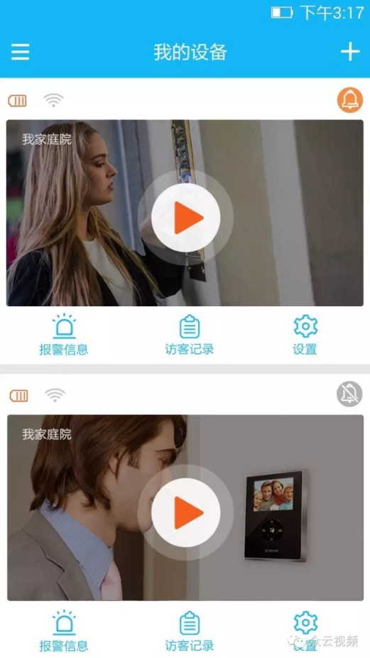
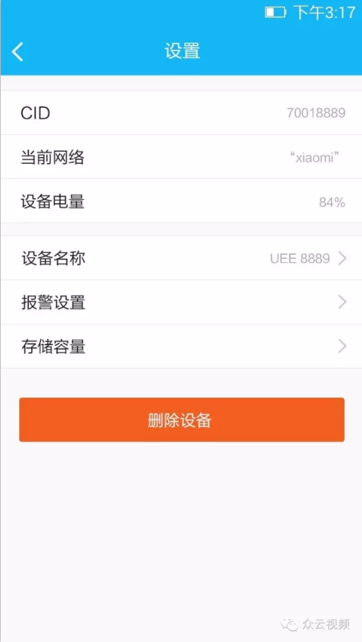
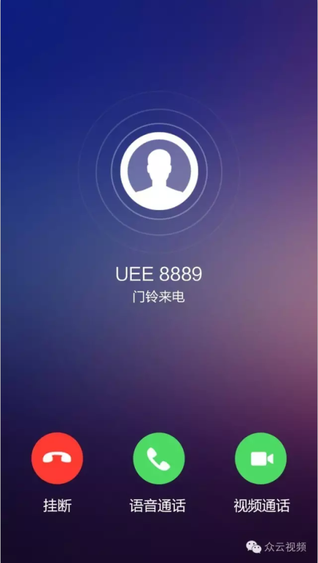

可视门铃市场情况
市场的火热催生了生产商的热情，可以看到，越来越多的传统安防企业开始涉足门铃市场，市面上的门铃大概可以分为两类：一类是高端设备，优质的材料、Android的系统、可操作的界面，售价在几百元到上千不等；另一类是低端产品，没有复杂的系统，去掉大部分功能和操作界面，只保留安防监控所需要的基本功能，售价也在一百元以内。基本上每款门铃设备都搭配一个APP使用。
但不管是高端还是低端设备，有一个共同点就是“便捷”，便捷体现在不需要穿墙布线，门铃自带一块电池，低功耗技术可以让一块装有3000毫安电池的门铃持续工作3个月时间以上。
可视门铃功能介绍
可视门铃这么便捷，到底有什么功能？毋庸置疑，可视门铃最主要的功能是“远程查看实时视频”和“实时收到报警推送”。
1、查看实时视频：通过手机客户端远程访问门铃摄像头，查看实时视频。
2、双向语音对讲：通过手机客户端与访客进行远程对讲。
3、报警消息推送：门铃触发报警，立马将报警消息推送到手机客户端。
4、报警触发截屏：门铃触发报警，立马截图，并将截图传到手机客户端。
5、历史访客查看：手机客户端查看历史访客照片。
6、低功耗运行：可实现低功耗运行，无需频繁更换电池。
7、......
开发门铃APP有什么困难？
可视门铃的众多功能，需要配合移动APP才能实现，有开发能力的厂商自己开发APP，没有开发能力的也会选择定制外包，开发APP并不是很难的事情，很多厂商遇到的难点其实在于“视频”这一块，如何保证p2p视频传输的稳定性？如何降低视频的延迟？如何提供视频传输在不同运营商下的打通率？如何搭建能承载百万级、千万级用户的服务器？这些问题都是厂商很难在短时间内去自己解决的。
众云视频推出门铃中性版本APP（众云门铃）
众云视频是专业的远程视频方案解决商，为智能家居、物联网、车联网、航拍无人机、安防监控等各种智能设备和软件提供从音视频编码传输到存储分析的一站式解决方案 ，已经和众多芯片厂商，智能设备商、解决方案商，运营商达成合作伙伴关系，包括中兴，TCL，大疆，君正，软通动力等。对接了上百种的智能设备，包括可视化门铃，家用机器人，航拍无人机，网络摄像机（IPCam），DVR/NVR，NAS，3G/4G摄像机，智能机顶盒，Baby Monitor，3G/4G车载记录仪，智能汽车后视镜等等。
继“众云监控”中性版本发布后，2016年5月底，为了解决可视门铃企业在开发APP上的难题，众云视频在参考了众多合作客户的意见和市场反馈后，隆重推出了可视门铃APP中性版本——众云门铃。APP实现了实时视频、语音对讲、报警截图、访客查看等功能。开发者无需投入几个月时间自己开发APP，利用众云视频门铃中性版本几天就能快速完成开发。
  在此之前，众云视频就推出了实时视频的SDK，解决了创业者视频的难题，如今众云视频推出门铃中性版本旨在帮创业者扶上马后再走一段。我们希望有更多的创业者能接入众云视频连接平台，如果你也需要门铃解决方案，请与我们联系！
原创文章转载请注明：www.zvcloud.com